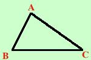

|
In un triangolo rettangolo un cateto e' uguale ai 3/4 dell'altro, Sapendo che la somma dei cateti e' m 21 determinare l'area del triangolo  Il problema ci fornisce tutti i dati che servono Scrivo i dati AB = 3/4 AC AB + AC = 21 m Ho due relazioni, una mi serve per mettere la x e l'altra per risolvere il problema. Potrei anche risolvere il problema con un sistema, in questo caso basta sostituire x e y ai segmenti coinvolti nelle relazioni So che un cateto e' 3/4 dell'altro cateto, allora se chiamo il secondo cateto x il primo cateto sara' 3/4 x AC = x AB = 3/4 x Sostituisco nella seconda relazione 3/4 x + x = 21 Ora sviluppo l'equazione 3 --- x + x = 21 4 m.c.m. = 4 3x + 4x 84 ----------- = ----- 4 4 7x = 84 x = 84/7 = 12 Quindi AC = 12 m AB = 3/4 · 12 m = 9 m Il problema non e' finito: devo trovare l'area So che l'area di un triangolo rettangolo e' cateto per cateto fratto due quindi Area = (AB · AC) /2 = (9 · 12)/2 = 54 m2 |